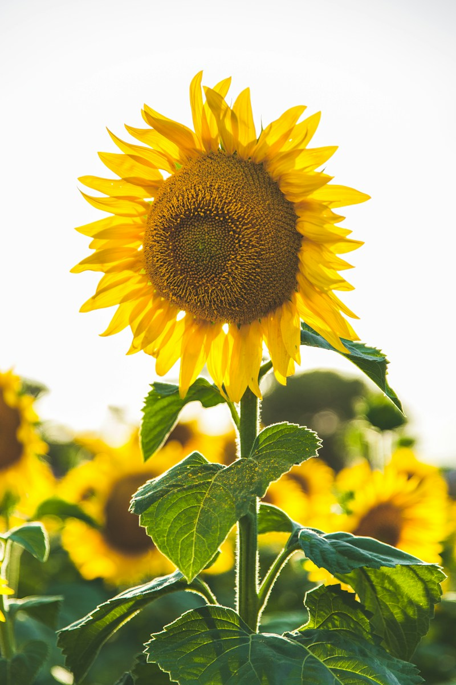

A little flower power
Let the good
things grow.
More sunshine. More wildflowers. More stopping to smell the good stuff. Welcome to your happy little corner of the internet.
Plant a little happinessNo green thumb required.
Just bring your good energy.

Grow happy.
A tiny break for your brain
Make a little happy place.
Pick a color. Tap anywhere to plant.
There’s no wrong way to grow.
Click, tap, or focus the garden and press Enter to plant.
Your next good thing starts with a flower.
Meet your next favorite
Find your flower people.
Some steal the show. Others whisper.
Get to know the flowers that make you pause.
Bloom times vary by variety and climate. Follow your local season.
Small rituals, longer blooms
A little care
goes a long way.
A fresh bunch, a favorite vase, and a few quiet minutes. Here’s how to make the most of them.
01 Give them a fresh start +
Use a clean vase and fresh water. Trim the stems with clean, sharp scissors before placing your flowers in water.
02 Keep the water clear +
Remove any leaves below the waterline. Refresh the water regularly and clean the vase when it starts to look cloudy.
03 Find their happy place +
Keep your arrangement in a cool spot away from direct sunlight, heaters, and ripening fruit. Remove faded blooms as they finish.
The Petal & Stem philosophy
You don’t need a garden
to have a floral life.
Just a single stem on your desk. A wildflower spotted on a walk.
We’re here for the small things that bring the outside in.